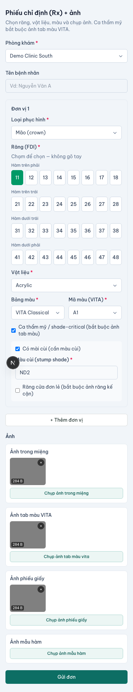
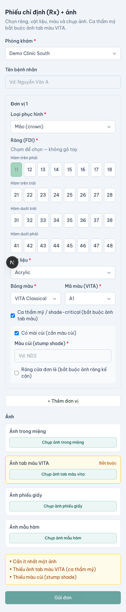

Rx & chụp ảnh
Cái đi vào labo phải đủ và đúng — shade sai là nguyên nhân làm lại số 1.
Rx & chụp ảnh chuẩn hoá phiếu chỉ định (Rx) và bộ ảnh đi kèm một work order: chọn răng, màu, vật liệu theo mẫu cố định và chụp/đính ảnh trong miệng + ảnh phiếu giấy. Đây là xương sống chất lượng dữ liệu đứng sau Đặt đơn không cài: intake mở cửa cho phòng khám vào, còn tính năng này đảm bảo cái đi vào là dữ liệu đủ và đúng — để labo làm đúng ngay từ đầu, không phải hỏi lại, không redo.

Trường bắt buộc của Rx
Mỗi work order phải có Rx tối thiểu gồm: ≥1 răng (tooth), material, shade, và loại phục hình (restoration/unit). Các trường chọn từ bảng chuẩn, không nhập tự do:
- Răng (tooth) — chọn trên sơ đồ FDI, chỉ chấp nhận mã hợp lệ (11–48); không gõ tay.
- Shade — chọn mã VITA (Classical 16 bậc hoặc 3D-Master); mỗi unit có shade riêng khi cần.
- Material — chọn từ danh mục chuẩn (zirconia, e.max, PFM…); material ngoài danh mục có cảnh báo, không im lặng nuốt.
- Ảnh — phải có ≥1 ảnh: ảnh trong miệng và/hoặc ảnh phiếu giấy chụp lại đều hợp lệ.
Rx hiển thị cho phía labo đúng như phòng khám nhập — không suy diễn, không tự đổi tooth/shade/material. Ở VN phiếu labo thường do phụ tá điền, nên nhập liệu là camera-first, gõ tối thiểu, nhanh hơn Zalo.
Shade là bắt buộc — vì sao chặn gửi
Với phục hình thẩm mỹ, shade không chỉ là một mã VITA. Gửi shade thô một mã là nguyên nhân làm lại số 1 ở VN. Vì vậy Rx dẫn phụ tá qua một mini-flow shade bắt buộc:
- Mã VITA (Classical / 3D-Master) — bắt buộc.
- Stump shade (màu cùi đã mài) — bắt buộc khi mài cùi (crown/veneer trên răng thật), chọn từ bảng chuẩn.
- Ảnh tab VITA áp sát răng — bắt buộc ≥1 ảnh cho mọi ca shade-critical (crown sứ, veneer, mặt dán, cầu vùng cười — zirconia/e.max/sứ).
- Ảnh răng kế cận / răng đối — khuyến nghị mạnh; với veneer/răng cửa đơn lẻ là bắt buộc.
Nút gửi khoá đến khi đủ ảnh tab cho ca shade-critical, có nhãn rõ "Thiếu ảnh tab màu". Ca không thẩm mỹ (ví dụ crown kim loại/PFM phía sau theo cấu hình labo) có thể được miễn.

Impression vật lý vs digital
Đa số ca ở VN là dấu/mẫu vật lý (impression), không phải STL. Ảnh mẫu hàm + ảnh phiếu giấy là một đường gửi hợp lệ, ngang hàng với ảnh trong miệng — không bị hạ cấp so với STL. STL/scan chỉ là đường nâng cấp tuỳ chọn, đơn vẫn gửi được chỉ bằng ảnh (xem Tải STL / scan).
| Đường | Cần gì | Trạng thái |
|---|---|---|
| Dấu vật lý + ảnh | Ảnh mẫu hàm / phiếu giấy + Rx | Đường chính — đủ để gửi |
| Ảnh trong miệng | Ảnh trong miệng + Rx | Hợp lệ, ngang hàng |
| STL / scan | File .stl/.ply/.obj (tuỳ chọn) | Nâng cấp — không bắt buộc |
Ảnh gì cần chụp
- Ảnh trong miệng vùng phục hình (và/hoặc ảnh mẫu hàm vật lý).
- Ảnh phiếu giấy (Rx) chụp lại — hợp lệ cho ca dùng dấu vật lý.
- Ảnh tab VITA áp sát răng — bắt buộc cho ca shade-critical.
- Ảnh răng kế cận / răng đối để so màu chuyển tiếp.
Ảnh được nén phía client trước khi upload (tối ưu mạng yếu VN); cho gửi lại và lưu nháp khi mạng lỗi, không mất dữ liệu.
Nếu nút gửi bị khoá: đọc nhãn — thường là thiếu ảnh tab VITA hoặc stump shade cho ca shade-critical. Bổ sung đúng ảnh/trường còn thiếu là mở khoá; đây là chốt chống làm lại, không phải lỗi hệ thống.